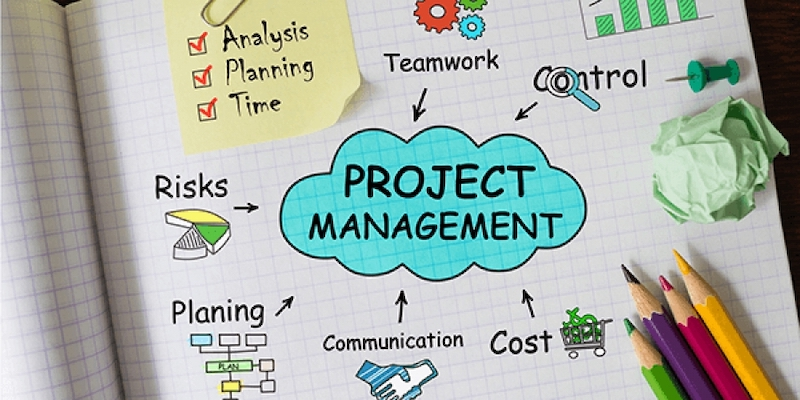

Improve your project estimation skills

In August 2008, two months after I had joined Ooyala, the engineering team embarked on a mission to completely rewrite our Flash-based video player. Ooyala, an online video startup, helped customers like TV Guide, the Association of Tennis Professionals, Armani, and TechCrunch manage and serve the thousands of videos on their websites. We offered a content management system, video transcoding services, and a player that customers embedded on their web pages to deliver videos to their viewers.
“We knew we wouldn’t be able to ship these and future customer requirements quickly enough without a more reliable foundation. And so we decided to rewrite the player to make it more modular and performant, and to build a cleaner and better-tested codebase.”
During one of our weekly meetings, the CTO and the product manager unveiled the write plan and schedule to the 8-person engineering team. Gantt charts broke down the work assignments, showed how long different tasks would take, and mapped out the dependencies between various parts...
In 2009, after studying over 50,000 software projects, the Standish Group concluded that 44% of projects are delivered late, overbudget, or missing requirements; 24% fail to complete; and the average slipped project overruns its time budget by 79%.
Project estimation is one of the hardest skills that an effective engineer needs to learn. But it's crucial to master: businesses need accurate to make long-term plans for their products...
We'll always operate under imperfect information. Therefore, successful project planning requires increasing the accuracy of our project estimates and increasing our ability to adapt to changing requirements.
Use Accurate Estimates to Drive Project Planning
A good estimate is an estimate that provides a clear enough view of the project reliability to allow the project leadership to make good decisions about how to control the project to hit its targets
How to effectively handle gaps between the estimates and targets is the focus of this chapter.
How do we produce accurae estimates that provide us the flexibility we need?
Decompose the project into granular tasks: When estimating a large project, decompose it into small tasks and estimate each one of them. If a taks will take more than two days, decompose it further.A long estimate is a hiding place for nasty surprisesEstimate based on how long tasks will take, not on how long you or someone else wants them to take: Managers challenge estimates, pushing for tasks to be completed sooner. If you've made your estimates granular, however, you can defend them more easily.Think of estimates as probability distributions, not best-case scenarios: Because we operate with imperfect information, we instead should consider our estimates as probability distributions over a range of outcomes, spanning the best-case and worst-case scenarios. Instead of telling a product manager or other stakeholder that we’ll finish a feature in 6 weeks, we might instead tell them,There’s a 50% likelihood that we can deliver the feature 4 weeks from now, and a 90% chance that we can deliver it within 8 weeks.Let the person doing the actual task make the estimate: Divvying up the estimation work also enables more team members to practice estimation skills and builds team-wide visibility into how different members over- or underestimate their work (most people underestimate). When I now need to set project goals, I schedule sessions with my team where we dedicate time to estimate work.Beware of anchoring bias: Dan Ariely, a Duke professor who studies behavioral economics, conducted an experiment where he asked students to write down the last two digits of their social security number and then estimate the price of a bottle of wine. Students with higher social security number digits estimated significantly higher prices for the wine, sometimes more than twice as high. The arbitrary numbers had subconsciously anchored and affected their estimates. The same effect often happens in software projects where a manager might casually guess at the amount of work required for a project or ask you for a quick ballark estimate.Use multiple approaches to estimate the same task: This can help increase confidence that your approach is sound. For example, suppose you're building a new feature, you can:Decompose the project into granular tasks, estimate each individual taks, and create a bottom estimate
Gather historical data on how long it took to build something similar
Count the number of subsystems you have to build and estimate the average time required for each one
Beware the mythical man-month: Because one woman can give birth to a baby in nine months doesn’t mean that nine women can give birth to a baby in one month.The communication overhead from meetings, emails, one-on-ones, discussions... grows quadratically with the size of the team. Moreover, new team members require time to ramp up on a project before they're productive.
Validate estimates against historical dataIf you know that historically, you’ve tended to underestimate by 20%, then you’ll know that it’s worthwhile to scale up your overall estimate by 25%.Use timeboxing to constrain tasks that can grow in scope: Plan instead to allocate a fixed amount of time, or a time box, to open-ended activities. Rather than estimating that the research will likely take three days, commit to making the best possible decision you can, given the available data after three days.Allow others to challenge estimates: By reviewing estimates at a team meeting, we can increase accuracy of buy-in at the cost of some additional overhead.
Iteratively validating our ideas can lead us to better engineering outcomes. In the same way, iteratively revising our estimates can lead us to better project outcomes
Budget for the Unknown
What caused the schedule to slip excessively were all the unknown projects and issues that we hadn’t estimated or accounted for at all. These included:
Developing a unit testing harness for our new codebase, and writing our own mocking and assertion libraries for testing. These were tasks that we wanted to start doing as a best practice, but they hadn’t been included in the original estimates.
Realizing that a set of style guidelines could improve long-term code quality and that we should develop those guidelines before writing so much code.
Getting interrupted by a few high-priority customer deals, each of which pulled a few engineers off the team for a week or two.
Debugging video corruption issues that would crash Adobe’s player if a user jumped to video frames in certain, difficult-to-reproduce ways on Internet Explorer...
As engineers, our jobs typically require us to fix outstanding bugs, conduct interviews, attend team meetings, hold one-on-ones with our managers, participate in pager duty rotations, train new engineers who join the team, respond to email, and tackle many other recurring duties. Once you factor in these details, an 8-hour workday doesn’t actually provide 8 hours of working time on a project.
When setting schedules, build in buffer time for the unexpected interruptions. Some combination of them will occur with reasonable probability during long projects. Be explicit about how much time per day each member of the team will realistically spend on a given project.
Sometimes lays out the week-by-week project schedule in a spreadsheet, annotates it with who’s working on what each week, and blocks off the holidays and vacations.
Define specific project goals and measurable milestones
Define specific goals for a project based on the problem you’re working to solve, and then use milestones to measure progress on those goals. Tamar Bercovici used these techniques to successfully manage one of her large infrastructure projects at Box, the cloud storage company.
In late 2012, Bercovici's team faced a critical scaling challenge... After researching potential scaling options, Bercovici and her team kicked off a project to shard the massive folder and file tables. The goal was to horizontally partition the two tables so that they could store the partitions, or shards, on different databases...
The tricky part was doing it without any downtime
The project was time-sensitive and involved modifying large swaths of their 800K-line codebase. Every code path that queried one of the two tables needed to be modified and tested
Bercovici used a key strategy for reducing risk: she articulated a clear goal for her project based on a clear problem. The problem was that Box would soon be unable to support its growing traffic on a single database. Her goal was to migrate to a sharded architecture as soon as possible without any downtime.
The simple exercise of setting a project goal produces two concrete benefits:
A well-defined goal provides an important filter for separating the
must-havesfromthe nice-to-havesin the task lists.The 2nd goal benefit of defining specific project goals is that it builds clarity and alignment across key stakeholders.
Building alignment also helps team members be more accountable for lacal tradeoffs that might hurt global goals.
In retrospect, defining a more specific goal than “Rewrite Ooyala’s player in 4 months” would have been an effective way of shortening the project’s timeline. For example, we could have chosen as our goal, “As soon as possible, build a drop-in replacement for the video player that supports dynamically loadable modules, is unit tested, and can later be extended to support additional ad integrations, analytics reports, and video controls.” Doing so would have enabled us to build alignment around the required tasks and the ones that could be deferred and incrementally added later.
Even more effiective than defining specific goals is outlining measureable milestones to achieve them. This is the secondary complementary strategy that Bercovici's team used to reduce risk. When asked about the status of a certain task or project, our answer is frequently, "Almost done", or "80% code complete", partly again because we're poor at estimating our status and how much work is left". A concrete milestone, with a spcified set of features Xy, Y, Z and preferably accompanied by a target completion date, keeps us honest and lets us more accurately measure whether we're on track or far behind
For the sharding project, the milestones included:
Refactor the code so that file and folder queries can be sharded, e.g., by converting single-database MySQL joins into application-level joins that can work across multiple databases.
Logically shard the application so that it goes through the motions of looking up a shard’s location but still accesses data from a single database.
Move a single shard to another database.
Completely shard all file and folder data for all accounts
“Each milestone was a very clear point where we had introduced some value that we didn’t have before,” Bercovici explained.
Milestones act as checkpoints for evaluating the progress of a project and as channels for communicating the team’s progress to the rest of the organization. If we’ve fallen behind, a milestone provides an opportunity to revise our plan, either by extending the deadline or by cutting tasks.
Reduce Riks Early
Tackling the riskiest areas first helps us identify any estimation errors associated with them. The techniques to validate our ideas early and often also can defuse the risks associsted with projects.
If we're switching to a new technology, building a small-scale end-to-end prototype can surface many issues that might arise.
If we're adopting new backend infrastructure, gaining any early systematic understanidng of its performance and failure characteristics can provide insight into what's needed to make it robust.
If we're considering a new design to improve application performance, benchmarking core pieces of code can increase confidence that it meets performance goals.
In addition to the specific risks associated with a project, a risk common to all large projects comes during system integration, which almost always takes longer than planned.
How can we reduce integration risk? One effective strategy is to build end-to-end scaffolding and do system testing earlier.
Stub out incomplete functions and modules, and assemble an end-to-end system as soon as possible, even if it's only partly functional. Front-loading the integration work provides a number of benefits:
First, it forces you to think more about the neccessary glue between different pieces and how they interact, which can help refine the integration estimates and reduce project risk.
Second, if something breaks the end-to-end system during developement, you can identify and fix it along the way, while dealing with much leass ode complexity, rather than scrambling to tackle it at the end
It amortizes the cost of integration throughout the development process, which helps build a stronger awareness of how much integration work is acutally left.
Approach rewrite projects with extreme caution
A very common characteristic of software engineers is our desire to rewrite something from scratch. Perhaps the original codebase is littered with technical debt or covered with monkey patches accumulated over time, and we think, Wouldn’t it be nice to redesign it and make it cleaner? Or perhaps the original design was too simple and lacked features—Wouldn’t it be great if we could do X and Y?
“Unfortunately, rewrite projects are also some of the riskiest projects”
Rewriting projects are particularly troublesome for a few reasons:
They share the same project planning and estimation difficulaties as other software projects
Because we tend to familiar with the original version, we typically underestimate rewrite projects more drastically than we would undertaking in a new area.
It's easy and tempting to bundle additonal improvement into a rewrite.
When a rewrite is ongoing, a new features or improvements must either be added to the rewritten version or they must be duplicated the existing version and the new version.
Engineers who successfully rewrite systems tend to do so by converting a large rewrite project into a series of smaller projects. They rewrite a software system incrementally, in more controlled phases. They adopt the mindset that Martin Fowler advocates in Refactoring: engineers should use a series of incremental, behavior-preserving transformations to refactor code. “By doing them in small steps you reduce the risk of introducing errors,” Fowler advises. “You also avoid having the system broken while you are carrying out the restructuring—which allows you to gradually refactor a system over an extended period of time."
Harry Zhang took a similar approach when rewriting the software that powers the API at Lob. Zhang’s team builds an API for companies to print and mail documents and products. Their codebase had become messy and difficult to work with, and they decided to rewrite their API services in Node.js. Rather than doing it all at once, they built a proxy server that would selectively route traffic for different API endpoints between the old and new API servers. As long as they preserved the interface, they could incrementally deploy their servers to handle new endpoints and also switch back if they encountered errors or issues. The incremental approach gave them significantly more leeway to complete the rewrite while addressing ongoing customers issues.
Sometimes, doing an incremental rewrite might not be possible—perhaps there’s no way to simultaneously deploy the old and new versions to different slices of traffic. The “next best approach is to break the rewrite down into separate, targeted phases.
Don't sprint in the middle of a Marathon
The team needs to put in 25% more hours—working 50 hours per week instead of 40—for the next two months, in order to hit the deadline. Unfortunately, the actual math is not that simple. There are a number of reasons why working more hours doesn’t necessarily mean hitting the launch date:
“Hourly productivity decreases with additional hours worked.”
You’re probably more behind schedule than you thinkThe fact that your schedule has slipped means that the work in previous months was underestimatedAdditional hours can burn out team members: Those extra overtime hours come from somewhere, people are sacrificing time that would otherwise be spent with friends, family...Working extra hours can hurt team dynamics: Not everyone on the team will have the flexibility to pitch in the extra hours.Communication overhead increases as the deadline looms. A frenzy of activity often accompanies the days or weeks leading up to the launch date...
Having said this, at times you’ll still be in situations where you think a small dose of overtime is necessary to hit a key deadline:
Making sure everyone understands the primary causes for why the timeline has slipped thus far.
Developing a realistic and revised version of the project plan and timeline
Being ready to abandon the sprint if you slip even further from the revised timeline.